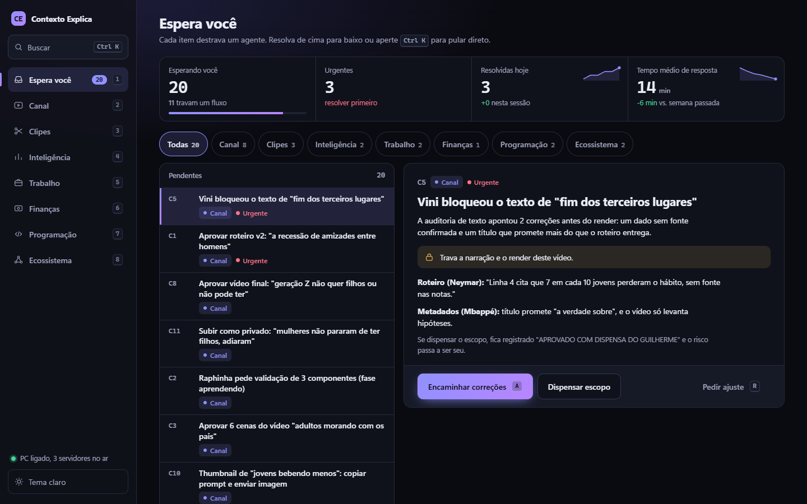
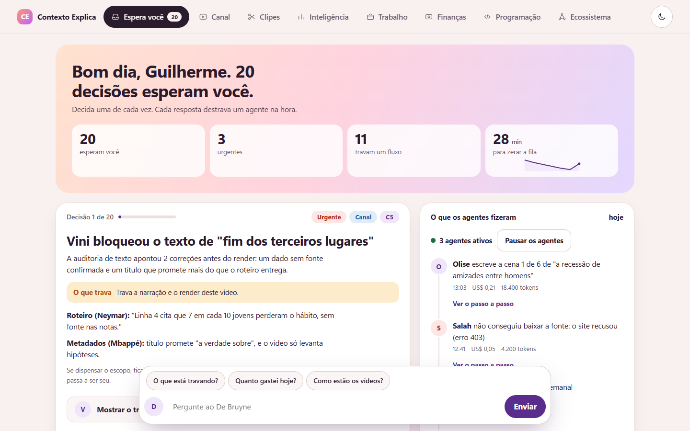
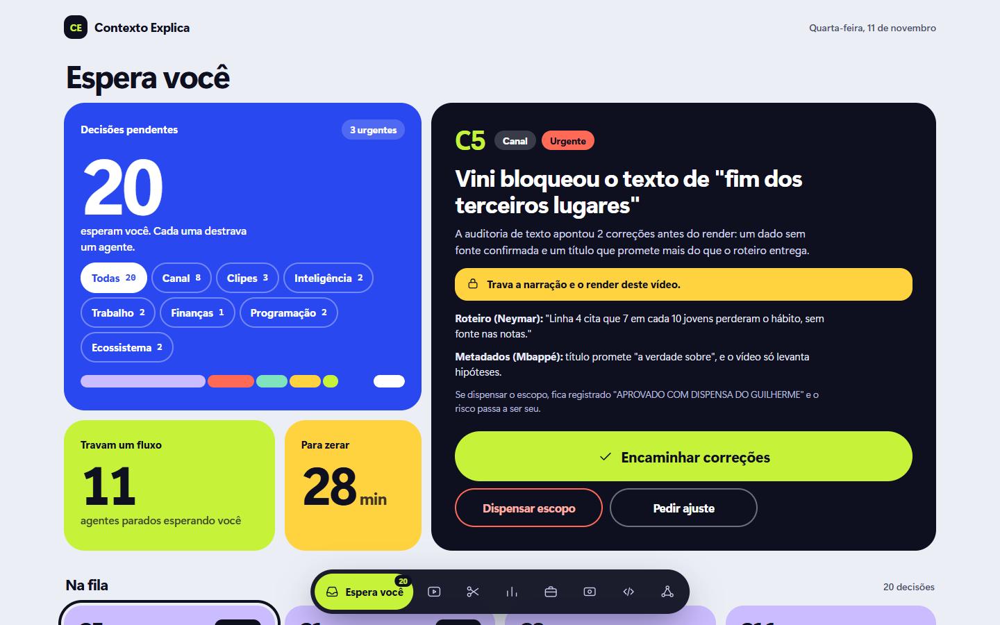

Três estilos novos: D, E e F
Cada um refaz as telas Espera você e Canal com os mesmos dados. Abra no computador e no celular. O que muda é a ideia de produto, não só a cor.

DCommand center
Escuro, calmo e feito para o teclado. Parece uma ferramenta de quem trabalha o dia inteiro nela.
- Ctrl K abre uma paleta que navega, abre decisões e aprova
- J e K percorrem a fila; A aprova; R pede ajuste
- Números em mono, densidade alta, tema claro opcional
- Canal com consumo de tokens e custo por job

EAction center
Uma decisão por vez, com o trabalho do agente à mostra e uma conversa embutida no rodapé.
- "Mostrar o trabalho": fontes, confiança, custo e o que mudou
- Aprovar sempre em verde, no mesmo lugar
- Linha do tempo dos agentes e botão para pausar
- Barra de conversa com o De Bruyne, sem balão flutuante

FBento colorido
Cartões de cor chapada e números enormes. A tela que ganha o print no site de vendas.
- Cada setor tem a sua cor, da fila ao gráfico
- Decisão da vez em cartão escuro, ação principal em lima
- Dock flutuante no lugar do menu lateral
- Só tema claro, para manter as cores vibrantes
Só as telas Espera você e Canal estão desenhadas; os outros seis grupos do menu mostram um aviso. Os valores são ilustrativos e não há segredo em nenhum arquivo. Os estilos A, B e C ficam em index.html.